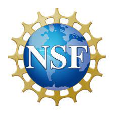

My Projects
LLM for Network Traffic in Cybersecurity
- The challenge lies in heterogeneous traffic data including both plaintext and ciphertext.
- Developed a foundation model that leverages the T5 architecture to learn pre-trained representations from massive traffic data.
-
Apply the proposed models to 20 downstream tasks, including IoT attack detection and Malware detection.
Physcis-based Learning for Cyber-Physical Systems
-
Incorporated the laws of physics into deep learning models to improve their interpretability and generalization
- Developed Taylor Neural Networks without using activation functions
-
Apply the proposed models to cyber-physical systems, AD, and climate changes
Concept-based Interpretable Machine Learning
-
Proposed a novel ControlVAE that combines control theory with Variational Autoencoders to disentangle the latent factors.
- Adopted disentangled latent factors to explain the prediction results
Privacy-Preserving Federated Learning
-
Developed data-free one-shot federated learning for heterogeneous data
-
Developed adaptive gradient protection method to achieve a good trade-off between interpretability and privacy protection
